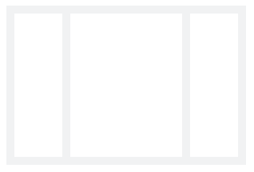
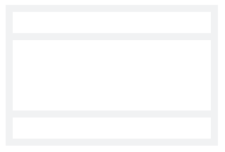

display: flex;
display: inline-flex;
flex-direction: row | row-reverse | column | column-reverse;
justify-content: flex-start | flex-end | center | space-between | space-around | space-evenly;
align-items: stretch | center | flex-start | flex-end;
flex-wrap: nowrap | wrap | wrap-reverse;
flex-basis: auto | number;
flex-grow: number;
flex-shrink: number;
.box {
display: flex;
width: 500px;
gap: 100px;
}
.box div:nth-child(1) {
width: 50px;
height: 50px;
flex-grow: 1;
background-color: #f40;
}
.box div:nth-child(2) {
width: 50px;
height: 50px;
flex-grow: 2;
background-color: #f40;
}
200+200=400=300+100->200-50，200-50
400+200=600=300+300->400-200，200-100
flex: flex-grow flex-shrink flex-basis;
| Item | Desc |
|---|---|
| flex: none; | 0 0 auto；默认 |
| flex: auto; | 1 1 auto；自动分配；如果有，则放大；否则压缩；根据内容大小来分 |
| flex: num; | 无单位数值，0 num 0% |
| flex: num; | 带单位数值，指的是flex-basis；其它为默认值，相当于1 0 num；不建议使用 |
| flex: 1 1 num; | 可以放大或压缩，初始大小为num 可以简写为flex: num; |
| flex: 1 0 num | 有剩余则放大，但是不能压缩，至少mum |
.wrap div:nth-child(even) {
align-self: center;
}
.col2 {
display: flex;
}
.col2 .left {
flex-basis: 80px;
}
.col2 .right {
flex: 1;
}
col2 {
display: grid;
grid-template-columns: 80px 1fr;
}
. 左右固定；中间自适应
. 不考虑优先渲染
<div class="col3"> <div class="left"></div> <div class="main"></div> <div class="right"></div> </div>
.col3 {
display: flex;
}
.col3 .left,
.col3 .right {
flex-basis: 80px;
}
.col3 .main {
flex: 1;
}
. 考虑优先渲染
<div class="col3"> <div class="main"></div> <div class="left"></div> <div class="right"></div> </div>
// ... ...
col3 {
display: grid;
grid-template-columns: 80px 1fr 80px;
}
. 上下高度固定；中间自适应
. 为了容纳更多内容，中间指定 overflow-y: auto
. 多见于移动端

.stack {
display: flex;
flex-direction: column;
height: 100vh;
}
.stack .top,
.stack .bottom {
height: 80px;
}
.stack .middle {
flex: 1;
overflow-y: auto;
}
.stack {
display: grid;
grid-template-rows: 80px 1fr 80px;
min-height: 100vh;
}
.wrap {
display: flex;
}
.wrap .item {
flex: 1;
}
.wrap {
display: grid;
grid-template-columns: repeat(2, 1fr);
}
或
.wrap {
display: grid;
grid-template-columns: 1fr 2fr 3fr 1fr;
}
.wrap {
display: flex;//df
justify-content: center;//jcc
align-items: center;//aic
height: 100vh;//h100vh
}
.sudoku {
display: flex;
gap: 10px;
flex-wrap: wrap;
width: 100%;
max-width: 800px;
}
.sudoku .item {
width: 30%;
aspect-ratio: 16/9;
flex: auto;
}
.bread {
display: flex;
flex-wrap: wrap;
}
. 子项显式指定 flex: auto；同九宫格一样，让其自动占用剩余空间
. 子项指定最大宽度 max-width，避免最后一项铺满[是否需要铺满，看设计需求]
. 可以使用水平分布吗？
.bread.adv li {
flex: auto;
max-width: 115px;
//
}
.cor-wrap div {
flex: 1;
}
.cor-wrap div:hover {
flex-basis: 200px;
}